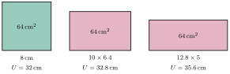
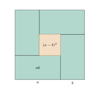

Aufgabe 6.10
In Analogie zum isoperimetrischen Problem lässt sich das isoplanare Problem formulieren:
Unter allen Rechtecken gleichen Inhalts, welches hat den kleinsten Umfang?
- Dies ist das «umgekehrte» Problem zu Aufgabe 6.9
- Nutzen Sie ähnliche Methoden wie beim isoperimetrischen Problem
- Bei festem Flächeninhalt variiert der Umfang
- Das Quadrat spielt wieder eine besondere Rolle
Schritt 1: ausprobieren

Drei Rechtecke mit je $64$ cm$^2$: Je länger und schmaler, desto grösser der Umfang. Das Quadrat mit $8$ cm Seite hat mit $32$ cm den kleinsten. Das ist eine Vermutung, noch keine Begründung.
Schritt 2: das Windrad

Vier Rechtecke $a\times b$ und das Quadrat in der Mitte ergeben zusammen das grosse Quadrat mit der Seite $a+b$: \[(a+b)^2 = 4ab + (a-b)^2 \;\ge\; 4ab = 4A .\] Also ist $a+b \ge 2\sqrt{A}$ und der Umfang $U = 2(a+b) \ge 4\sqrt{A}$. Genau $4\sqrt{A}$ ist der Umfang des Quadrats mit dem Inhalt $A$, und Gleichheit gibt es nur, wenn das Loch verschwindet, also für $a = b$.